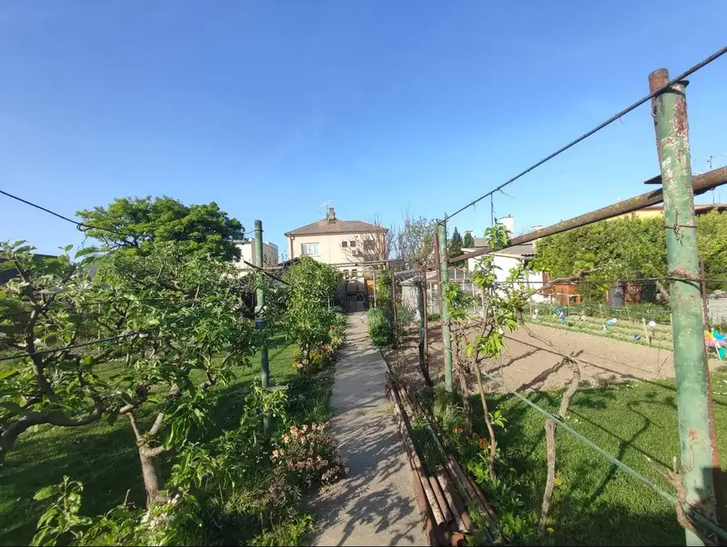
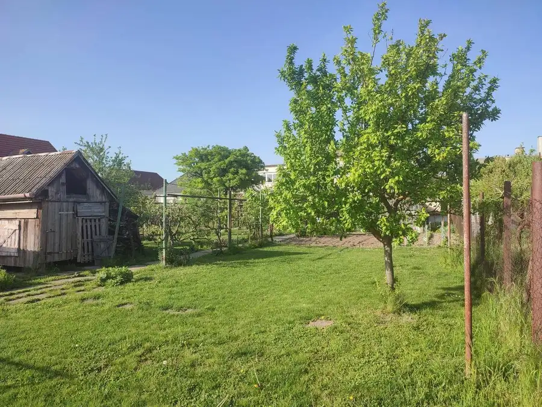
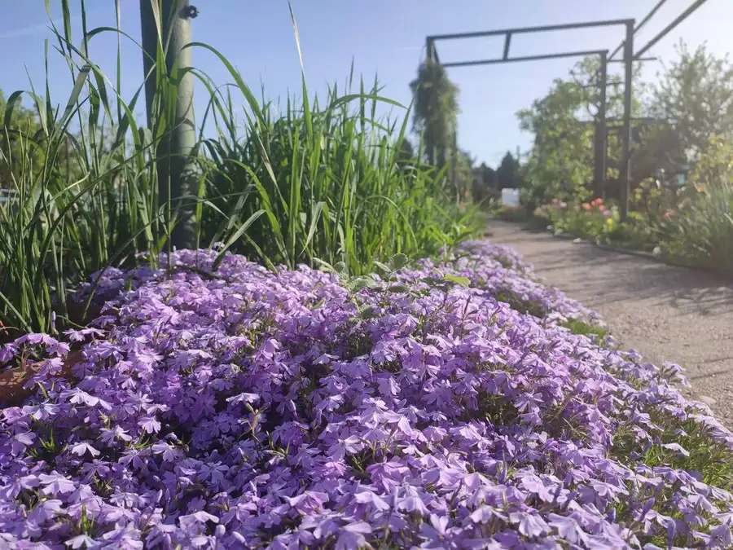
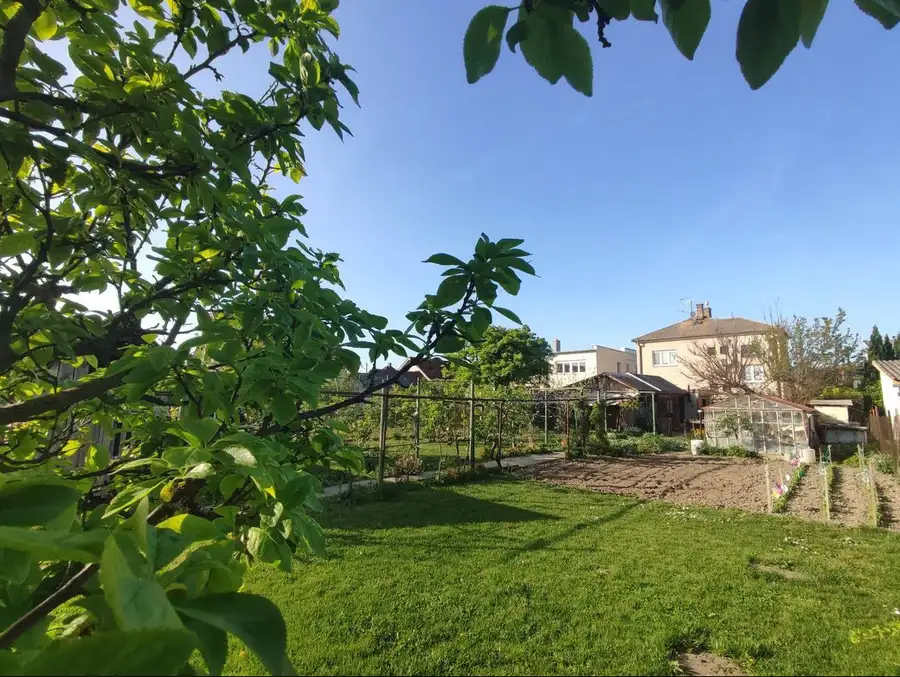
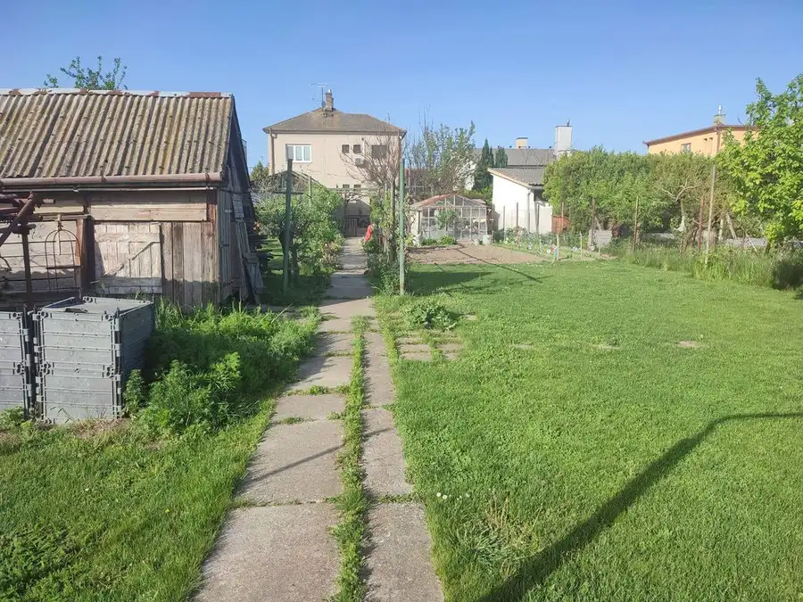
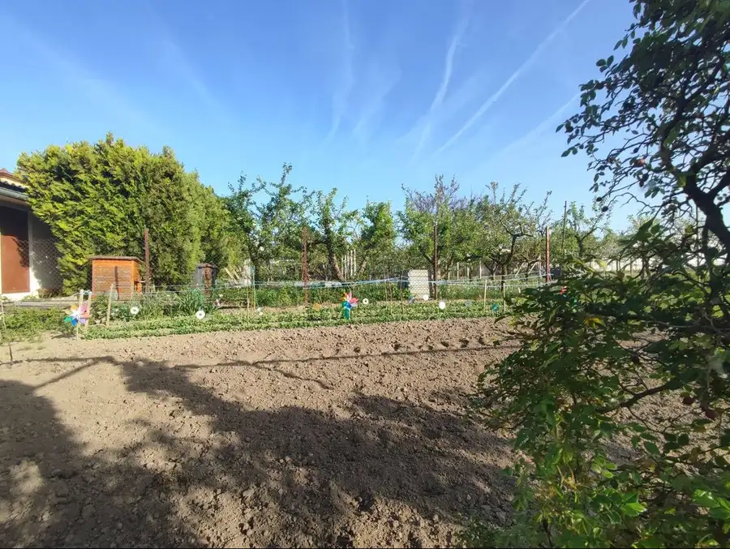
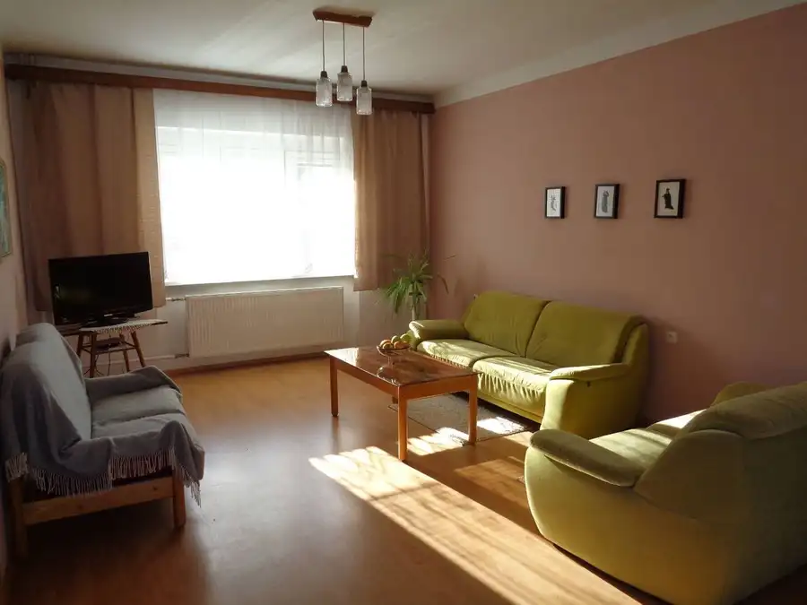

Na predaj 5-izbový rodinný dom v Šamoríne s pozemkom 938m2
Šamorín







- Plocha243 m²
- StavČiastočná rekonštrukcia
- VlastníctvoOsobné
O nehnuteľnosti
Podpísaná rezervačná zmluva.Ponúkame na predaj poschodový samostatný murovaný 5-izbový rodinný dom podpivničený so sedlovou strechou s pozemkom s rozlohou 938m2 v Šamoríne . Dom je orientovaný do tichej záhrady a na vedlajšiu cestu. Orientácia záhrady juh. Dom je vhodný na dvojgeneračné bývanie , alebo bývanie s podnikaním. Šírka pozemku 15m. I.S. plyn, elektrina, Mestská voda, studňa, kanalizácia , príjazdová cesta.Úžitková plocha rod. domu je 241,82m2 z toho pivnica 77m2. Zastavaná plocha : 99m2Príslušenstvo: 2 x vedlajšia stavba - zastavaná plocha spolu 52m2 / murovaná garáž 24m2 + záhradný domček 28m2 /.Čiastočná rekonštrukcia: rod. dom má plastové okná, parapety a 2x menené vchodové drevené dvere - predné a zadné . Kotol a radiátory boli menené v roku 2010. Zásobník vody v roku 2016. Kúpeľňa na prízemí je zrekonštruovaná. Kuchynská linka bola zrekonštruovaná v roku 1996. Na schodoch menená dlažba. Dom je udržiavaný.Kolaudácia domu : 1974, Kolaudácia garáže: 1993DISPOZÍCIA DOMU: priložený pôdorys PRÍZEMIE: Hala s rozlohou 8,87m2, 2 x izby s rozlohou 20,80m2 a 16m2 sú spojené a vytvárajú priestrannú obývaciu izbu s rozlohou 36,80m2. Kuchyňa s rozlohou 11,24m2 , Kúpeľňa so sprchovým kútom má rozlohu 4,76m2, samostatné WC s rozlohou 1,72m2 . Schodisko 12,99m2. Rozloha spolu: 76,38m2POSCHODIE: Hala s rozlohou 8,87m2, 3 x samostatné izby s rozlohou 17,60m2, 18,40m2 a 12,68m2 . Tretia izba má veľký balkón v tvare L s rozlohou 11,44m2 . Kúpeľňa so sprchovým kútom má rozlohu 4,76m2, samostatné WC s rozlohou 1,72m2 . Schodisko 12,99m2. Rozloha spolu: 76,38m2 + 11,44m2 balkón.PIVNICA: Dispozícia 4 miestnosti s oknom s rozlohou 18,40m2- sklad , 14,60m2 - kotolňa , 17,60m2 - dielňa a vodáreň s rozlohou 7,61m . Chodba má rozlohu 6,87m2 a schodisko 12m2. LOKALITA: Nehnutelnosť sa nachádza v tichom prostredí ideálne na rodinné bývanie.Lokalita má výbornú dostupnosť na dialnicu do Bratislavy alebo Dunajskej Stredy.Cena rodinného domu spolu s pozemkom 938m2 je v RK.V cene sú zahrnuté všetky poplatky spojené so zmenou vlastníckych práv,kúpna zmluva. Poskytujeme: kompletný právny servis, vyhotovenie potrebných zmlúv, zaistenie vkladu do katastra nehnuteľností , zaistenie financovania pri kúpe nehnuteľností – hypotekárny úver. kontakt na makléra: Jozef Šafránek, mobil:0905 427 962, mailová adresa: jozef.safranek.reality@gmail.com
Parametre
- Doprava
- Diaľkový autobus, Diaľnica, Cesta, Cyklistická infraštruktúra
- Druh
- Rodinný dom
- Druh domu
- Dvojgeneračný
- Dátum zverejnenia
- 27. 04. 2025
- Dĺžka pozemku
- 62.53
- Energetický certifikát budovy
- nie je
- Pivnica
- Murovaná
- Plocha pozemku
- 938 m²
- Podpivničenie
- Úplné
- Počet balkónov
- 1
- Počet garáží
- 1
- Počet izieb / miestností
- 5
- Počet kúpeľní
- 2
- Počet nadzemných podlaží
- 2
- Počet pivníc
- 1
- Počet podzemných podlaží
- 1
- Počet spální
- 5
- Príprava teplej vody
- El. akumulačný boiler
- Prístupová komunikácia
- Asfaltová
- Rok kolaudácie
- 1974
- Rok výstavby
- 1974
- Stav nehnuteľnosti
- Čiastočná rekonštrukcia
- Telekomunikácie
- Internet, Optická sieť
- Terén pozemku
- Rovinatý
- Typ
- Predaj
- Typ konštrukcie
- Tehlová
- Vlastníctvo
- Osobné
- Vybavenie
- Technická miestnosť, Balkón, Pivnica, Garáž
- Vybavenie objektu
- Štandardné
- Vykurovanie
- Ústredné
- Zastavaná plocha
- 99 m²
- Zdroj tepla
- Teplo z kotolne
- Úžitková plocha
- 243 m²
- Šírka pozemku
- 15